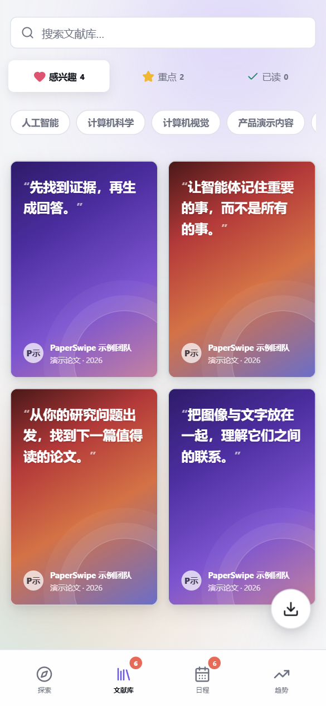
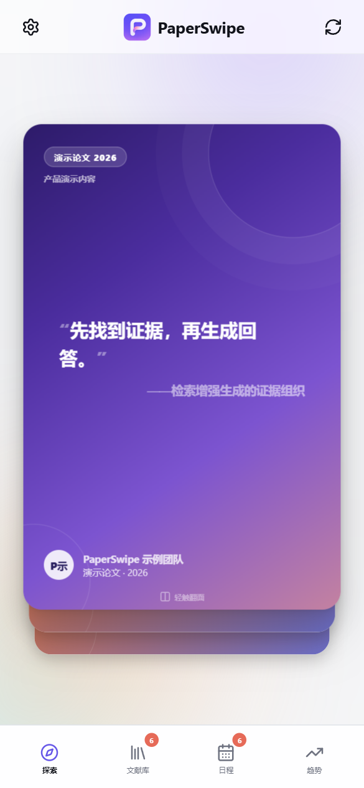
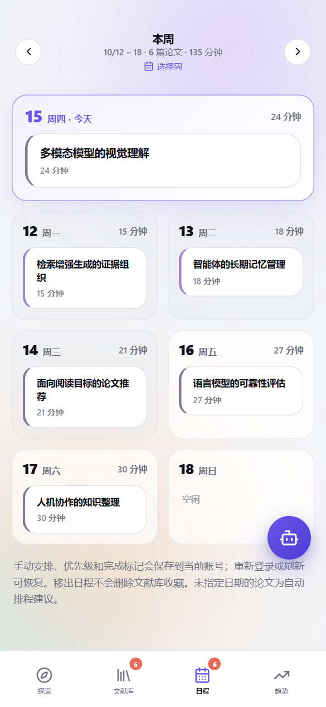
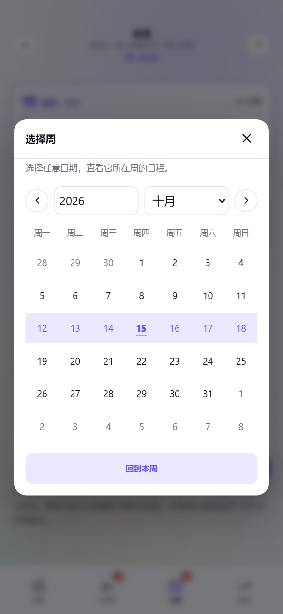
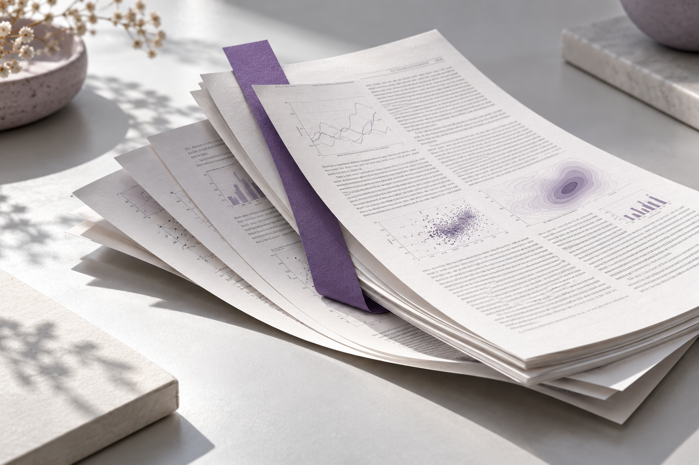
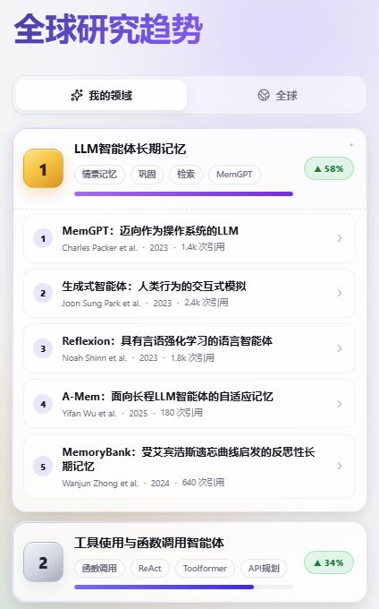

筛得更细，读得更准。
搜索标题或作者，叠加学科筛选。所选分类都匹配，才留下这篇文献。


不用一开始就埋进全文。先了解研究在做什么，再把时间留给真正相关的内容。
AI 解读帮助初筛，重要结论仍需回到论文原文核对。
感兴趣、重点、已读，各有归处。那些让你停下来的想法，不必再散落在浏览器标签页里。
搜索标题或作者，叠加学科筛选。所选分类都匹配，才留下这篇文献。
全选、取消全选、删除选中文献。整理自己的阅读清单，不用一篇篇重来。
导出 BibTeX；也可配置自己的 Zotero 账号凭据，将选中文献导入 Zotero。
把论文安排进一周，用日历直接跳转。读过什么、接下来读什么，自己掌握。
点击周标题打开日历，直接选择想看的那一周。



把时间，还给阅读本身
PaperSwipe 不是替你完成研究，而是帮你少做一些重复筛选，多留一点空间给判断、理解和新的问题。
在 Trending 中浏览不同领域的主题，给下一次探索找一点灵感。
目前为交互演示。榜单、数量、增幅和示例论文是预置内容，不代表实时热点，也不代表已经核验的研究结论。

点击“立即体验”打开网站，用团队发给你的个人邀请码登录。目前为邀请制内测；还没有邀请码，请联系邀请你参与内测的人。邀请码是登录凭证，请勿转发。
界面、论文标题和摘要都支持切换。作者姓名、期刊名称等专有名称可能保留原样。首次内容翻译需要等待，已有翻译会复用缓存；AI 翻译可能有误，请结合原文阅读。
视频为团队提供的 10 月 15 日操作录屏。页面中的功能截图另使用演示数据，线上功能以实际部署版本为准。
现在可以通过浏览器进入内测。手机 App 的安装包与上架进度以团队通知为准，本页不提供尚未发布的平台下载。
邀请制内测，期待你的真实反馈。